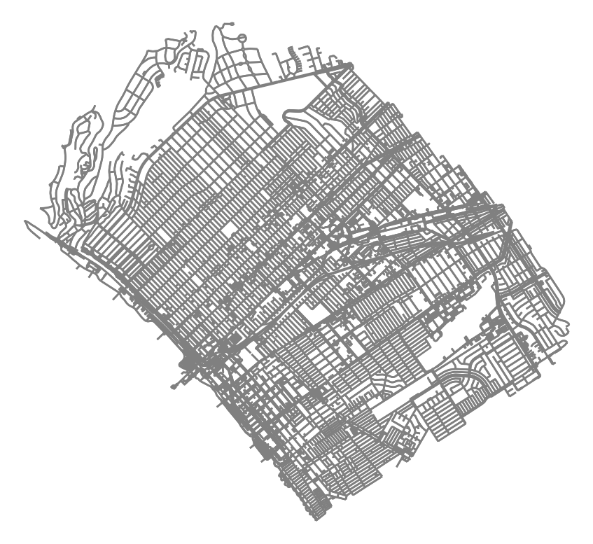
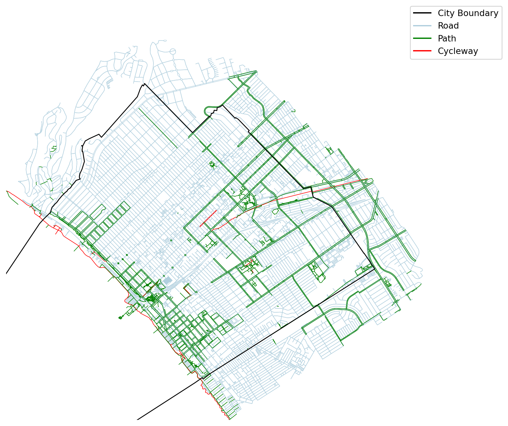

import pandas as pd
import geopandas as gpd
import networkx as nx
import osmnx as ox
import matplotlib.pyplot as plt
import matplotlib.lines as mlinesExample for OpenStreetMap Data Extraction
Modes in Santa Monica Road Network
Import Libraries
Download OpenStreetMap Data
# Define the place name or address
place = "Santa Monica, California, USA"
# Retrieve the road network for the place
G = ox.graph_from_place(place, network_type='all', buffer_dist=1000)
# Retrieve the boundary polygon for the place
boundary = ox.geocode_to_gdf(place)
# Plot the road network within the boundary
fig, ax = plt.subplots()
ox.plot_graph(G, bgcolor='w', edge_color='gray', node_size=0, ax=ax)
boundary.plot(ax=ax, edgecolor='black', facecolor='none', linewidth=2)
plt.show();
<Figure size 672x480 with 0 Axes>Acquire data as GeoDataFrames
# Convert the NetworkX graph to GeoDataFrames
nodes, edges = ox.graph_to_gdfs(G)
# Look at the data columns
edges.columns
# Look at counts per edge type
edge_types = edges['highway'].value_counts()
edge_typesfootway 11420
service 9333
residential 7484
tertiary 2596
secondary 1364
primary 1029
cycleway 336
unclassified 332
[steps, footway] 152
pedestrian 84
path 84
trunk 50
steps 42
motorway_link 38
secondary_link 29
[residential, footway] 24
[service, footway] 24
[path, footway] 16
motorway 15
[residential, service] 14
[service, residential] 13
trunk_link 13
tertiary_link 10
[unclassified, service] 8
[residential, path] 6
[path, steps] 6
primary_link 6
[path, residential] 4
[steps, pedestrian] 4
[residential, steps, footway] 4
[cycleway, footway] 4
[footway, pedestrian] 3
[pedestrian, footway] 3
[steps, corridor, footway] 2
[service, cycleway] 2
track 2
[track, footway] 2
[path, steps, footway] 2
[residential, steps] 2
[unclassified, footway] 2
[tertiary, residential] 1
[residential, tertiary] 1
Name: highway, dtype: int64# Generalize highway types
# https://wiki.openstreetmap.org/wiki/Tag:highway%3Dpedestrian
edges['highway'] = edges['highway'].apply(lambda x: ', '.join(x) if isinstance(x, list) else x)
edges['highway'] = edges['highway'].str.replace('footway|steps|pedestrian|corridor|track', 'path')
edges['highway'] = edges['highway'].str.replace('roads_link|motorway_link|trunk_link|primary_link|secondary_link|motorway_junction', 'roads')
edges['highway'] = edges['highway'].str.replace('motorway|trunk|primary|secondary|tertiary|unclassified|residential|service', 'roads')
edges.loc[edges['highway'].str.contains('roads'), 'highway'] = 'roads'
edges.loc[edges['highway'].str.contains('cycleway'), 'highway'] = 'cycleway'
edges.loc[edges['highway'].str.contains('path'), 'highway'] = 'path'
edge_types = edges['highway'].value_counts()
edge_types/var/folders/13/hf_sfnls1lq6kn8vsc92q40h0000gn/T/ipykernel_43240/3233845876.py:4: FutureWarning:
The default value of regex will change from True to False in a future version.
/var/folders/13/hf_sfnls1lq6kn8vsc92q40h0000gn/T/ipykernel_43240/3233845876.py:5: FutureWarning:
The default value of regex will change from True to False in a future version.
/var/folders/13/hf_sfnls1lq6kn8vsc92q40h0000gn/T/ipykernel_43240/3233845876.py:6: FutureWarning:
The default value of regex will change from True to False in a future version.
roads 22404
path 11822
cycleway 340
Name: highway, dtype: int64Color-code roads by type
#https://stackoverflow.com/questions/63102436/coloring-edges-in-osmnx-graph-based-on-edge-attribute
# get one color for each highway type in the graph
color_list = ['#B0CFDE','green','red'] #
#color_list = ox.plot.get_colors(n=len(edge_types), cmap='hsv', return_hex=True)
#color_list = ['#00e600','#ffcc99','fuchsia']
#color_list = ['#ccccff','green','magenta']
#color_list = ['white','lime','magenta']
color_mapper = pd.Series(color_list, index=edge_types.index).to_dict()
edges['color'] = edges['highway'].map(color_mapper)Plot details
# check the bounds for xlim and ylim
minx , miny , maxx , maxy = edges.total_bounds # = [-118.5250193, 33.9888725, -118.4328995, 34.0586015]
# custom legend
black_line = mlines.Line2D([], [], color='black', label='City Boundary')
blue_line = mlines.Line2D([], [], color='#B0CFDE', label='Road')
green_line = mlines.Line2D([], [], color='green', label='Path')
red_line = mlines.Line2D([], [], color='red', label='Cycleway')fig, ax = plt.subplots(figsize=(10, 8))
edges.plot(ax=ax, color = edges['color'], linewidth=0.5, zorder=1);
boundary.plot(ax=ax, edgecolor='black', color='none', zorder=10);
ax.legend(handles=[black_line,blue_line,green_line,red_line], bbox_to_anchor=(1.2, 1.1)) #loc='lower left',
ax.set_ylim(miny, maxy)
ax.set_xlim(minx, maxx)
#ax.set_xticklabels([])
#ax.set_yticklabels([])
#ax.spines['top'].set_visible(False)
#ax.spines['right'].set_visible(False)
#ax.spines['bottom'].set_visible(False)
#ax.spines['left'].set_visible(False)
ax.axis('off')
plt.show();